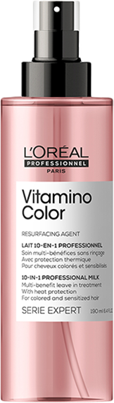

SPRAY 10W1
vitamino
color
zatrzymaj kolor,
uwolnij blask.
Gama stworzona z myślą o włosach koloryzowanych, aby zachować ich długotrwały kolor i blask oraz zminimalizować powstawanie niechcianych refleksów na włosach. Odżywia włosy koloryzowane, chroniąc kolor aż do 8 tygodni*. Formuła Vitamino Color oparta została na resveratrolu, silnym przeciwytleniaczu, który chroni włosy przed wolnymi rodnikami.
Profesjonalna formuła
Resveratrol - silny antyoksydant. Naturalny polifenol pozyskiwany głównie ze skóry winogron. Wysoko skoncentrowany przeciwutleniacz, który zapobiega uszkodzeniom komórek spowodowanym przez wolne rodniki. Wzmacnia metabolizm błonnika, zapewniając szybszą regenerację zniszczonym włosom. Pomaga zneutralizowac tlen i żelazo.
Spray 10w1 vitamino color
Niewielką porcję olejku nanieś na umyte, osuszone ręcznikiem włosy. Następnie rozprowadź kosmetyk od połowy ich długości aż po końce. Nie spłukuj. Stylizuj wedle uznania.
Olejek Absolut Repair może być stosowany również do podkreślenia efektu końcowego fryzury.